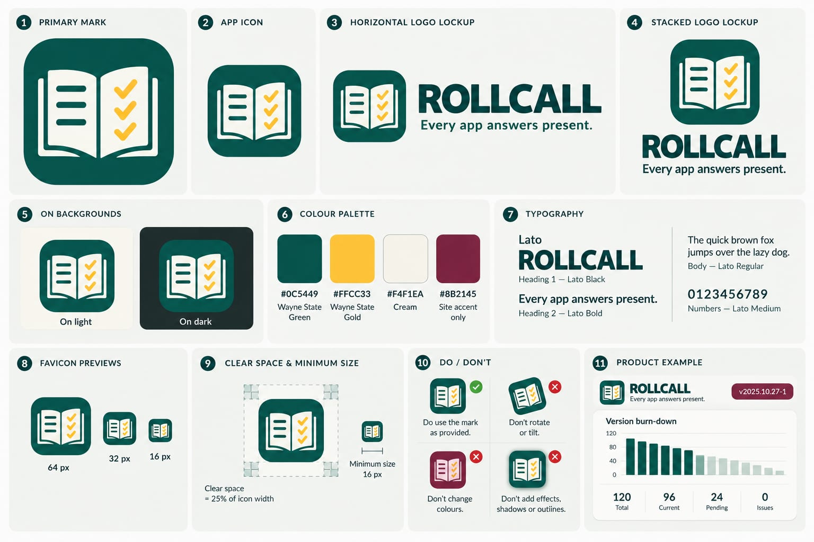

Rollcall#
This page says what Rollcall is and where it sits in the stack. Next: install it, then run the quick start.
Every app answers "present". The ones on PHP 7.4 answer from the back row.
Front page: site/index.html. It is static, with no build step (see site/README.md).
On Citadel, the raw-PHP deploy layer in deploy/ serves it: a Squire kit whose front controller puts site/ behind HELMET's security headers. For local development, serve site/ directly.
Rollcall is the fleet scanner for the Wayne State application stack. For each app it records the PHP image, the
lowest PHP its composer.json allows, the Laravel version, the auth package and its version, the PROCTOR result,
and, when the app commits one, the result, Booster version and finish time of Booster's hop record
(booster-hop.json). Then it looks up each version by date in CREED's policy.json. It keeps one snapshot per
scan, so you can see drift and an EOL burn-down over time. It prunes old snapshots after the retention window
(default 90 days; the newest one always stays).
Rollcall enforces nothing. It never opens an issue, leaves a comment or deploys anything, and scan and report
exit 0 whatever the fleet looks like (only rollcall owners, a check of the owners file, exits 1). The public
report has totals only: counts and progress, no app names, owners or rankings. The per-app list is internal. Like a good attendance sheet, it is for noticing who is missing, not for shaming them.

One page of the roll book, called name by name. Sample data: the apps are fictional, and a real scan's per-app list stays internal.
Where it sits in the stack#
The parts of the Wayne State application stack, and their jobs. WELD is the Laravel starter app that has most of them installed:
| Part | Job |
|---|---|
| WayneUI (project 0) | The interface layer: tokens, components, four consumer paths |
| CREED | The standards and policy.json, the dates Rollcall reads |
| PROCTOR | Measures one app against the policy; Rollcall reads its JSON report and never re-runs a rule |
| SESAME | Protocol-neutral auth; Rollcall reports which auth package each app uses |
| HELMET | Baseline runtime and its own optional /metrics |
| Sourdough | Starters for every app shape |
| Squire | The Citadel deploy kit; the layer that serves this repo's front page is one |
| Preflight | CI templates |
| Pinstripe | The coding standard this repo includes for its Pint and PHPStan settings |
| Booster | The upgrade tool; Rollcall reads its hop record (booster-hop.json) to see who is catching up |
| Rollcall | The fleet census and EOL burn-down |
| Drawbridge | The one OpenID Connect front door for the Citadel |
| ADVISOR | The stack's read-only MCP server; Rollcall's module gives it three fleet tools |
| WELD | The Laravel starter app with most of the stack installed |
WayneUI and the stack. Everyone is here today; the ones in the back row know who they are.
scripts/readme-art. Present.The brand board (the cover of the book)

Install#
One line:
composer require waynestate/rollcall
The first command is php bin/rollcall scan; the quick start runs it on the fixtures in the repo, and Install has the rest.